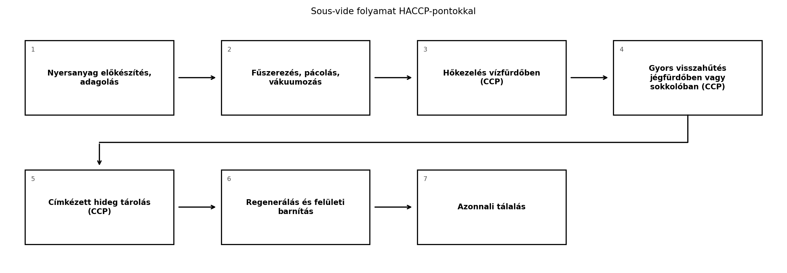

Egy étterem vasárnapi ebédjére 60 adag marhahátszínt kell előkészíteni. A hagyományos sütőben a hús felülete 180 °C-os levegővel érintkezik, a belseje lassan melegszik: a széle jól átsült, a közepe rózsaszín, a szeletek egyenetlenek. A vendég panaszkodik, a maradékot ki kell dobni. A sous-vide ezt a hibát úgy kerüli el, hogy a húst a kívánt maghőmérsékletű vízfürdőbe teszi, és ott tartja. A hús belseje pontosan olyan hőmérsékletű lesz, mint a víz, de ehhez szigorú élelmiszer-biztonsági fegyelem kell.
Képzeld el a vákuumozott húst átlátszó tasakban, amely teljesen elmerül a vízfürdőben. A víz hőmérséklete 60 °C. Eleinte a hús belseje hideg, de a víz minden oldalról egyenletesen melegíti. Ha a vízfürdőt 60 °C-on tartod, a hús soha nem melegszik 60 °C fölé. Maghőmérővel megvárod, amíg a hús közepe eléri a 60 °C-ot, majd ettől az időponttól számítod a pasztőrözéshez szükséges tartást. Az alábbi folyamatábra a biztonságos sous-vide útját mutatja.

A tárolás és a regenerálás külön kritikus pont, mert a vákuumozott, alacsony hőmérsékleten hőkezelt hús nem steril. Ha a hűtés lassú, a spórás baktériumok elszaporodhatnak.
Az idődiagram a hőkezelés lépését nagyítja ki, a lenti 2. Számítás adataival: a mag 35 perc alatt éri el a 60 °C-os vízfürdő hőmérsékletét, a 60 perces tartás csak ekkor kezdődik, így a kivétel a 95. percben esedékes.
A görbe eleje meredek, a vége lapos: a mag az utolsó fokokat lassan veszi fel, ezért a felfűtési időt mindig tűszondás maghőmérővel mérd, ne becsüld. Az alsó, pontozott szakasz a leggyakoribb hibát mutatja. A HTML-kiadásban a vízfürdő hőmérséklete, a felfűtési idő és a tartás csúszkával változtatható, és az oldal kiírja a kivétel idejét.
Definíció. A sous-vide (vákuum alatti hőkezelés, francia: „vákuum alatt”) olyan konyhatechnika, amelynél a fűszerezett nyersanyagot vákuumtasakba zárják, majd szabályozott hőmérsékletű vízfürdőben vagy gőzben, a kívánt maghőmérsékleten, hosszabb ideig hőkezelik. A cél az egyenletes készültség és a kisebb tömegveszteség.
Definíció. A pasztőrözés a sous-vide-nál nem sterilizálás. A hőkezelés a kórokozó baktériumok számát az elfogadható, biztonságos szintre csökkenti. A spórák egy része túlélhet, ezért a kész ételt gyorsan le kell hűteni és hidegen kell tárolni.
Összefüggés. A pasztőrözés idő- és hőmérséklet-párokon alapul: minél alacsonyabb a maghőmérséklet, annál hosszabb ideig kell tartani. Ha a hőmérsékletet emeled, a szükséges idő erősen csökken. Az alábbi táblázat tanulási értékeket mutat; az üzemi határértéket mindig a HACCP-terv és a hatályos útmutató adja meg (ellenőrizendő: NÉBIH-útmutató, EFSA, üzemi HACCP-terv).
| Maghőmérséklet (°C) | Tájékoztató tartási idő (perc) | Jellemző alkalmazás | Megjegyzés (ellenőrizendő) |
|---|---|---|---|
| 55 | 120–180 | marha, bárány rózsaszín | hosszú tartás, kiemelt hűtési fegyelem |
| 60 | 60–90 | marha közepes, baromfimell | gyakori tankonyhai tanulási érték |
| 65 | 30–45 | baromficomb, puhább hús | a léveszteség nő, a fehérje jobban kicsapódik |
| 70 | 15–20 | hagyományos jól átsülthöz közelítő | biztonsági tartalék, de a hús szárazabb |
| 75 | néhány másodperc–kevés perc | hagyományos CCP-határ | azonnali ellenőrzéshez, nem feltétlenül sous-vide cél |
A táblázat csak a hőmérséklet-idő összefüggést szemlélteti. Indokolt eltérés a könyv 75 °C-os maghőmérséklet-szabályától: a sous-vide-ban a biztonságot a hőmérséklet és a tartási idő együtt adja (pasztőrözési egyenértékűség), ezért a baromfi 60–65 °C-os sorai csak validált, a HACCP-tervben rögzített időtartammal, tankonyhai felügyelettel és a sérülékeny csoportok kizárásával tanulhatók (ellenőrizendő: NÉBIH-útmutató / hatályos rendelet / HACCP-terv); a pillanatnyi 75 °C a hagyományos CCP-határ. A pontos idő függ a húsdarab vastagságától, a zsírtartalomtól, a csonttól és a kívánt állagtól. A Marhahús egészben és frissen sütve alfejezetben tanultad, hogy a maghőmérséklet határozza meg a készültséget; a sous-vide-nál ezt az elvet visszük tovább, csak alacsonyabb hőmérsékleten, hosszabb idővel.
A sous-vide-hoz legalább három eszköz kell:
A fő kép a helyes elrendezés: a tasakok teljesen elmerülnek, egymástól és a fűtőelemtől távol vannak, a víz körbe tudja áramolni őket; a vízszint a termosztát min./max. jele között van. A tűszondát tömítőszalagon át szúrd a hús középpontjába, így a tasak zárva marad. A bal alsó kép hibái (levegős, lebegő tasak; zsúfolt fürdő) miatt a hús egyes részei alulkezeltek maradhatnak. A HTML-kiadásban az eszközök kiemelhetők, és a helyes/hibás elrendezés között válthatsz.
A folyamat lépései:
Előkészítés
Hőkezelés
Hűtés és tárolás
Regenerálás és tálalás
Higiénia. A sous-vide nem sterilizál. A vákuumtasakból hiányzik az oxigén, ami kedvez a Clostridium botulinum és más spórás baktériumok szaporodásának. Ezért a tasakot a hőkezelés után soha ne hagyd szobahőmérsékleten. Ha a hűtési határidőt nem tudod tartani, az ételt a HACCP-terv szerint selejtezni kell.
Allergén. A vákuumtasakban lévő páclé, fűszerkeverék vagy vaj allergéneket tartalmazhat: tej, glutén, szójaszósz (szójabab), mustár, zeller. A címkén tüntesd fel az allergéneket, és az allergiás vendég ételét külön, elkülönített eszközökkel készítsd.
A sous-vide közeli rokona az alacsony hőmérsékletű sütés. Ilyenkor a húst nem vákuumozzák, hanem sütőbe teszik 70–90 °C-on, hosszú időre, akár éjszakára is. A cél a lassú, egyenletes átsülés. Az alacsony hőmérsékletű sütésnél a sütő levegője a hőközeg, ezért a felület lassan szárad, és a hús kisebb tömegveszteséggel sül, mint magas hőmérsékleten.
Figyelem. Az éjszakai sütés kockázata, hogy a sütő hőmérséklete éjszaka ingadozhat. Ha a sütő a beállított (70–90 °C) tartomány alá esik, a hús maghőmérséklete pedig 60 °C alatt marad hosszú ideig, a hús a veszélyes hőmérsékleti zónába kerül. Az éjszakai sütést csak hitelesített hőmérővel, tűszondával és ébresztővel, vagy a HACCP-tervben engedélyezett módon végezd. Baromfit, darált húst és töltött ételeket alacsony hőmérsékleten csak akkor süss, ha a hőkezelési idő-hőmérséklet páros teljesíti a pasztőrözést (ellenőrizendő: üzemi HACCP-terv).
Hiba. Ha a sütő hőmérséklete éjszaka a beállított tartomány (70 °C) alá csökken, és a hús maghőmérséklete nem éri el a pasztőrözési tartást, az ételt nem szabad felszolgálni. A sérülékeny csoportokra (várandós, kisgyermek, idős, legyengült immunrendszerű) fokozottan figyelni kell.
Továbbvitt eredmény. Az itt felépített sous-vide CCP-táblázatot – hőkezelés maghőmérséklet és idő, gyors visszahűtés, hideg tárolás, regenerálás – továbbvisszük a Konfitálás, cook-chill és mikrohullámú regenerálás alfejezetbe, mert a konfitálás és a cook-chill hasonló hűtési és regenerálási CCP-ket igényel.
Adott: 20 adag marhahátszín sous-vide, adagonként
140 g kész hús. A tisztítási hulladék 2 %, a hőkezelési veszteség 8
%.
Keresett: hány kg nyers húst kell vételezni?
Képlet:
Átrendezve:
Behelyettesítés:
Ellenőrzés:
Tehát körülbelül 3,11 kg nyers húst kell előkészíteni.
Adott: A vízfürdő 60 °C. A hús maghőmérséklete 35
perc alatt éri el a 60 °C-ot. Az előírt pasztőrözési tartás 60 °C-on 60
perc (tanulási érték, ellenőrizendő).
Keresett: Mennyi idővel a vízfürdőbe helyezés után
vehető ki a hús?
Számítás:
A húst a behelyezéstől számított 95. percben lehet kivenni. Ha valaki a 60 perces tartást a behelyezéstől számítaná, a hús közepe még éppen csak elérte a hőmérsékletet, és nem kapott pasztőrözést. Ezt a hibát a HACCP-naplóban mindig el kell kerülni.
Mérhető követelmények:
Érzékszervi követelmények:
Kritikus pont. A sous-vide hőkezelés, a gyors visszahűtés, a hideg tárolás és a regenerálás egyaránt CCP lehet. A veszély a spórás baktériumok túlélése és a hűtési lassúság miatti szaporodás. A felügyelet módja: hőmérséklet mérése, idő mérése, hűtő hőmérséklete. A kritikus határok tanulási értékek: hőkezelés 60 °C maghőmérséklet + 60 perc tartás; hűtés a főzés végétől (tasakban a vízfürdőből kivétel után) 2 órán belül 20 °C alá, majd további 4 órán belül 5 °C alá (a cook-chill szigorúbb célját lásd a Konfitálás, cook-chill és mikrohullámú regenerálás alfejezetben; ellenőrizendő: NÉBIH-útmutató / hatályos rendelet / HACCP-terv). Helyesbítő tevékenység: hőkezelés meghosszabbítása, gyorsabb hűtés, selejtezés. Regenerálás (hűtve tárolt tasaknál): legalább 75 °C maghőmérsékletre melegítés maghőmérővel ellenőrizve (egyezően Konfitálás, cook-chill és mikrohullámú regenerálás-mal); a határt a HACCP-terv rögzíti (ellenőrizendő). Tárolás: a hűtőtárolási idő korlátját a HACCP-terv adja meg (ellenőrizendő). Dokumentálás: sous-vide napló, hűtőnapló, ételminta.
Egy étterem hétvégi esküvőre 80 adag sous-vide kacsamellet készített elő. A séf a hőkezelés után a tasakokat a hűtőbe tervezte tenni, de a hűtőajtót a pincérek többször nyitották, és a hűtő belső hőmérséklete hosszú időre 8 °C fölé emelkedett. A hűtőnaplóban a hőmérsékletet később regisztrálták, a tasakok belső hőmérséklete nem csökkent elég gyorsan. A séf a HACCP-terv szerint a hűtési határidő túllépése miatt a tételt selejtezte, és a friss kacsamellet pótolta. A tanulság: a hűtési lánc megszakadása nem javítható utólagos hűtéssel, mert a baktériumszaporodás már megtörtént. A dokumentálás nélkül a hibát észre sem vették volna.
1. feladat (A)
Fogalmazd meg egy-két mondatban, mi a sous-vide lényege.
2. feladat (A)
Sorold fel a sous-vide folyamat öt fontos lépését a nyersanyagtól a
tálalásig.
3. feladat (B)
10 adag sertésszűz sous-vide készül, adagonként 120 g kész hússal. A
tisztítási hulladék 3 %, a hőkezelési veszteség 7 %. Hány gramm nyers
sertésszüzet kell vételezni?
4. feladat (B)
Egy sous-vide naplóban a következő adatok szerepelnek: vízfürdő 65 °C,
maghőmérséklet elérése 25 perc, tartási idő 45 perc. A dolgozó a húst a
65. percben vette ki. Jó-e ez? Indokold.
5. feladat (C)
Tervezz három CCP-t egy sous-vide csirkemell folyamathoz. Add meg
mindegyiknél a mért jellemzőt, a tanulási határértéket és a helyesbítő
tevékenységet.
6. feladat (D)
Egy kolléga a sous-vide húst a hűtő helyett a tálalóasztalon hagyja,
mert szerinte „a vákuum megvédi”. Elemezd a hibát: mi a veszély, mi a
helyes eljárás, és mit kell dokumentálni?
Önellenőrzés – válaszok
1. feladat (A)
A sous-vide vákuumtasakba zárt élelmiszert szabályozott hőmérsékletű
vízfürdőben vagy gőzben, a kívánt maghőmérsékleten, hosszabb ideig
hőkezeli, hogy egyenletes készültséget és kisebb veszteséget érjen
el.
2. feladat (A)
Előkészítés és darabolás; fűszerezés és vákuumozás; hőkezelés
vízfürdőben; gyors visszahűtés; címkézés és hideg tárolás; regenerálás
és azonnali tálalás.
3. feladat (B)
Kész tömeg:
.
Tehát 1,33 kg nyers sertésszüzet kell vételezni.
4. feladat (B)
Rossz. A 65. percben a hús maghőmérséklete már elérte a 65 °C-ot (25
perc), de a tartási idő 45 perc, így a kivétel időpontja 25 + 45 = 70
perc. A 65. percben a hús 5 percig nem kapott teljes pasztőrözést.
5. feladat (C)
Például:
6. feladat (D)
A vákuum nem véd a baktériumok ellen; a hőkezelt sous-vide tasakban
túlélő spórás anaerob mikroorganizmusok szaporodhatnak. A húst azonnal
jégfürdőbe/sokkolóba kell tenni, majd 0–3 °C-on, címkézve tárolni. A
hűtési időt és hőmérsékletet a HACCP-naplóban dokumentálni kell. Ha a
határidő túllépve, a tételt selejtezni kell.
A sous-vide vákuumtasakban, szabályozott vízfürdőben vagy gőzben, a kívánt maghőmérsékleten végzett hosszú hőkezelés. Nem sterilizál, hanem pasztőröz: alacsonyabb hőmérséklethez hosszabb tartási idő tartozik. A tartási időt a maghőmérséklet elérése után kell számolni. A kritikus pontok: hőkezelés, gyors visszahűtés, hideg tárolás, regenerálás. A hűtésnél a főzés végétől 2 órán belül 20 °C alá, további 4 órán belül 5 °C alá tanulási határérték (ellenőrizendő). A vákuum oxigénmentes környezete miatt a Clostridium spórák kockázata nő. Az alacsony hőmérsékletű, éjszakai sütésnél a sütő hőmérsékletét hitelesített tűszondával kell felügyelni. A sous-vide HACCP-tervét továbbvisszük a konfitálás, cook-chill és mikrohullámú regenerálás alfejezetbe (Konfitálás, cook-chill és mikrohullámú regenerálás), mert ott is a gyors hűtés és a regenerálás a legfontosabb CCP.